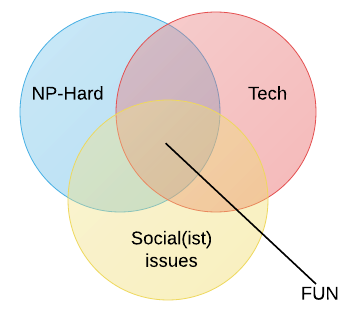
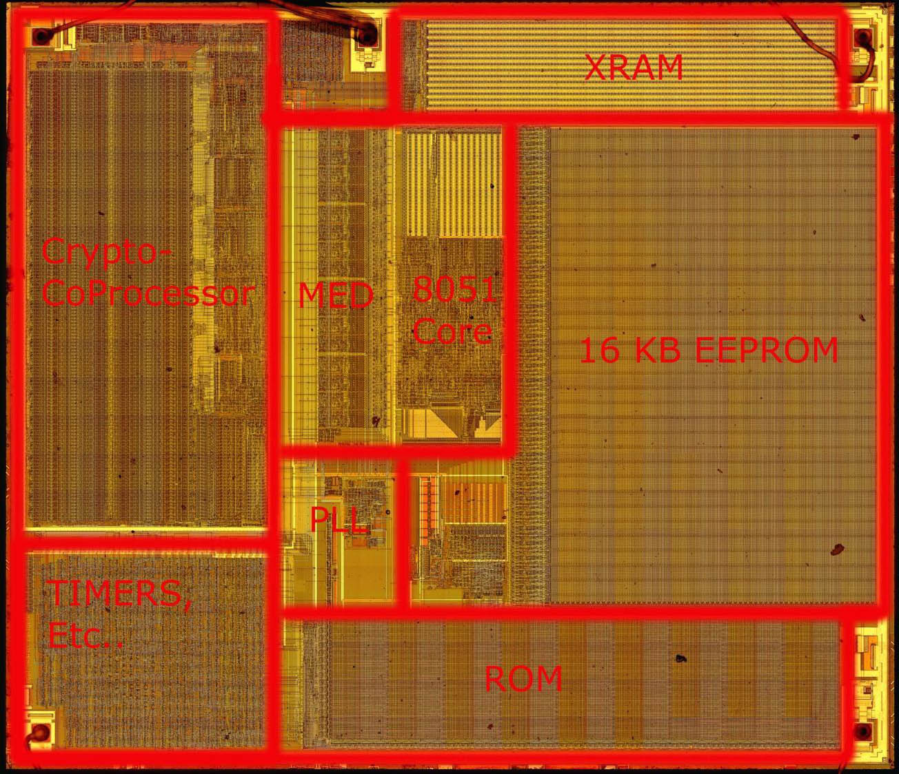
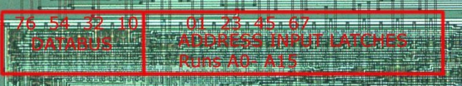
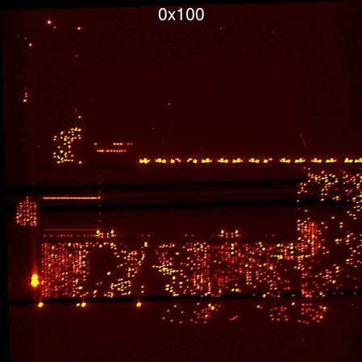
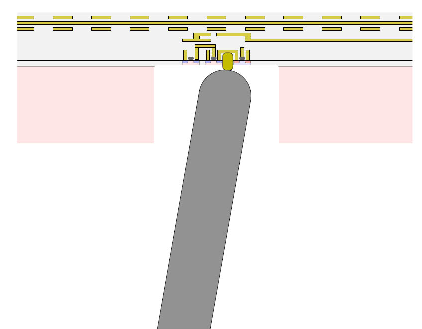
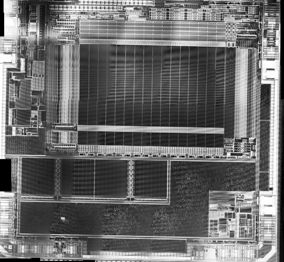

The "infamous" NorthSec
Smart Card Track
$whoami
- B.Sc. C.S.
- EMV/PCI (& other payment specs) Expert (avid ISO/RFC reader)
- Infosec passionate (*REcon, 2x nsec, CTFs ...)
- Originally JAPH, now CoolKids™ Python convert
- Currently employed by FI (security architect/smart card expertise)
- Obligatory Venn diagram :

Also, father :)
$man smartcard
Often misunderstood & FUD-infused...
“Any sufficiently advanced technology is indistinguishable from magic”
--Arthur C. Clarke
But is it really ?
$man smartcard_arch
- Pretty "simple" Von Neumann(-ish) designs
- Usually based on intel 8051 instruction set (16 bit)
- Proprietary/custom design/instructions
- *SOME* other arch (ARM, MIPS, etc.)
- Hardware crypto-processors (RSA/DES/AES)
- From a couple KB to a couple MB storage.

$man smartcard_sec
Many security features...
|
  |
$man smartcard_fail
Then again...
| Smart delayering/netlist reconstruction  |
||
| Photonic emission  |
IC Backside  |
Laser probing  |
$cat /dev/smartcard
How do you communicate with the chip ?
- Via a bi-directional serial interface
- Using T=0/T=1 (or T=CL) protocol
- Card contacts pinout:
- Only Vcc, I/O, RST, CLK & GND used
- Or just install the right packages & USB reader...
$cat /dev/smartcard
Basically, you send data to the card, it replies (or not).
$cat /dev/smartcard
Steps to communicate with the card.
- Establish protocol parameters, a.k.a obtain ATR (Answer To Reset), depends on tooling & reader.
- Send commands to the card, called APDU (Application Protocol Data Unit)
- Receive data & response code, called SW (Status Words)
$cat /dev/smartcard
APDU format (XX denotes 1 Byte in Hex)
- CLA: Class of the command "generally" '00' for industry-standard command and '80' for proprietary commands (could differ).
- INS: The instruction of the command : The actual instruction that the card will act upon (i.e. what to do).
- P1/P2: The First/Second Parameter : The parameters for the Instruction whenever it needs one (or '00' otherwise).
- Lc: The length of the Data that follows.
- Data: The Data to send to the card (also in hex), optional and not needed if Lc='00'.
Except for the Data, all those bytes are mandatory.
$cat /dev/smartcard
SW format (XX denotes 1 Byte in Hex)
- SUCCESS: 9000
- ERROR: 6XXX (Could be '6985', '6601', etc.) different code = different error.
- Special Case: 61XX, more bytes await in reply, send "GET RESPONSE" to card to have them.
$cat /dev/smartcard
Example using SELECT command.
$cat /dev/smartcard
One last advice... (a.k.a I was lazy)
You have to be very careful of the return of the SELECT command, some cards might return 9000 for any SELECT command even if the selected context does not exist.
You would only be able to know you've selected the right context by looking at the returned value from SELECT or by sending other commands to the application and see if they work.
HAX AWAY !
You need to find 11 flags :- The Card OS version* (Card I/O)
- The Card Serial Number* (Card I/O)
- The Protected Derived Key* (Card I/O)
- The First & Second Migration Export Key Part* (Crypto)
- The Mother Card Key (Crypto)
- The Derived Card Key* (Crypto)
- The Original Key* (Crypto) The Master Key (Crypto)
The Expense Count Reset Phone Number(N/A)- The Visual Flag
* = Independent flags.
$grep flag *

$grep Migration Export Key
Magic Formula :
4 Nested 3DES_EDE2_ECB Encryptions with varying keys.

$grep Migration Export Key
- Always encrypt. OK. Cancels itself out. Hmmmm ?
- Special Property of DES key schedule.
- DES(key,DES(key,X)) == X when key is a WEAK KEY.
- DES(key1,DES(key2,X)) == X when key1/2 is a SEMI-WEAK KEY.
- Property transposes from DES to 3DES (E, D, E).
- Known DES Semi-Weak Keys in pairs (c.f. Wikipedia) :
$grep Migration Export Key
|
This also gives you the MCK !
∎
$grep Derived (internal) Card Key.
- Weak exponent.
- Weak padding.
- Could this be... Textbook RSA fawkery ?
$grep Migration Export Key
Quick reminder on RSA :
What could happen if 'e' is small and 'm' is badly padded ?
Which leads to :
∎
$grep Master Key
First, find Original Key*Not Presented Tonight*.http://smartfacts.cr.yp.to/smartfacts-20130916.pdf
Then, notice that we know 'MCK', 'OK' and 'DCK'.
|
|
∎
$source .images
- Chris Tarnovsky (Flylogic / IOActive)
bh-eu-08-tarnovsky.pdf
http://www.securitytube.net/video/945 - Dmitry Nedospasov (starbug)
psj2013-day2_Dmitry_starbug_slides_PacSec.pdf
www.youtube.com/watch?v=wmv7tu7FSW0 - Karsten Nohl (srlabs.de)
BlackHat-Japan-08-Nohl-Secret-Algorithms-in-Hardware.pdf - Wikipedia
- The Intertubes